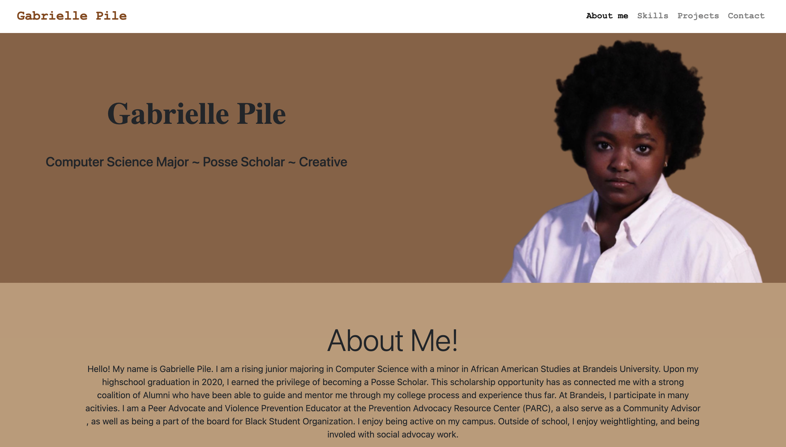

Gabrielle Pile
Computer Science Major ~ Posse Scholar ~ Creative
About Me!
Hello! My name is Gabrielle Pile. I have recently graduated Brandeis University with a Bachelor of Arts in Computer Science and a minor in African American Studies. I have a passion for Design and Web Development. On this website, you will learn more about my experience with different languages and frameworks as well as see examples of the projects I have worked on in school. Please feel free to contact me down below!Skills
Java & Python
I have about three years of experience both learning and using Java. I began learning Java in my senior year of high school and have countinued by taking an introdcutory class at my University, and using Java to complete my problem sets.
I have been coding in python for about two years. I learned the basics of python in an introductory course in college and now use the language in order to analyze large sets of data in my other programming courses.
HTML & CSS & Javascript
I have about three years of experience learning and using HTML & CSS. In college, I have taken a courses that focused on web development which refreshed my HTML,CSS, and Javascript skills. I have also learned about bootstrap and node js and used this to create projects, such as my personal website.
SQL & Data analysis
I have about two years of experience learning about and using SQL. In college, I have taken classes that required us to use SQL for organizing and analyzing large data sets.
I also have experience in analyzing large data sets using javascript and python to retrieve data from APIs. I developed and utilized this skill during my internship at Mount Sinani where I retrieved single cell RNA information from public databases in order to analyze it for the user.
Adobe Photo shop & Adobe Premier
I have about six months of experience learning and using Adobe Photoshop and Premier. I learned the basics of Adobe premier creating video essays for my college classes. I have also learned the basics of Adobe Photoshop from my time as an instructor at ID tech camp, where I taught game design with RoBlox Studio.
Projects
Personal Website
The summer of 2021 I worked on creating a personal wesbite where I could showcase my creativity using HTML, CSS (Bootstrap), and JavaScript. I wanted this wesbite to be used by others to learn more about my technical skills as well as the projects that I have worked on.
Movie Finder App
In the Spring of 2022, I took a class called Fundamentals of Software Engineering. In this class for my final project I created a movie finder app and I launched it using Heruko. This app allows users to search up American movies made between the years of 1980-2010; using the year, title, and keywords specific to that movie. I created a json file with movie data, then used this file to create a MongoDB cloud database with this information. Lastly, I used javascript to get information from the database based on the users request, HTML5, and CSS in order to format my page, and lastly launched it on Heruko.
Link to my movieFinderApp